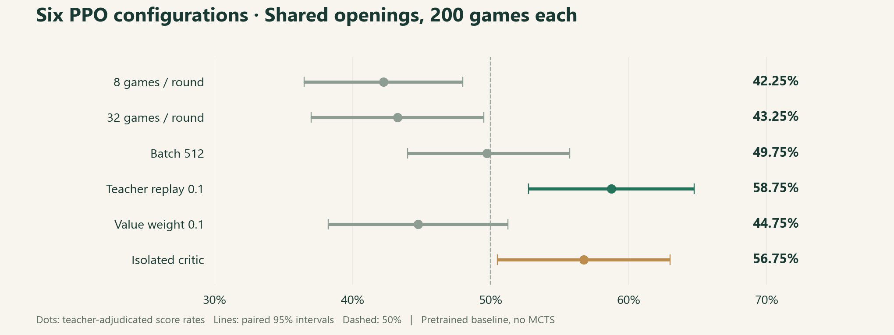

Explore without losing the game
Review candidate moves and score trends. Explore branches while preserving the original record; import and export SGF.
Find a move worth revisiting with KataGo.
Review, retry and compare—then record what you learned.
Extract · Double-click · Keep your games local
Windows 10/11 x64 with a compatible OpenCL GPU driver.

Play or import an SGF, save key positions and try your own move before revealing the lines. Notes, manual tags and scheduled reviews connect each session.
Review candidate moves and score trends. Explore branches while preserving the original record; import and export SGF.
Save a key move as a practice position. Constrained search checks your answer, so other moves close to the reference can pass too.
Step through the recorded line, your retry and the engine recommendation in sync. Inspect board differences and capture your own reasoning.

A ~320K-parameter student trained with KataGo supervision: pretraining, PPO post-training and controlled evaluation. Configurations, logs and negative results stay traceable.
Pretraining agreement with the teacher’s top move
2.91% → 27.37%
The selected PPO candidate scored 56.25% in a fresh 200-game check (95% interval: 49.75%–62.75%); an earlier batch scored 48.25%. These are teacher-adjudicated scores without MCTS, not ranks or official win rates. One training seed per configuration; ~8.9% of validation rows share early positions with training. Stable superiority is not established, and the student does not power the product.
Experiments and limitations (中文) ↗
YixiGo.exe. The local app opens in your browser.Python, KataGo and the model are included. This build requires an OpenCL GPU driver and has no CPU fallback. It is unsigned; SHA-256 checksums are provided with the release.
This is a static project page. Games, analysis and personal data run in the downloaded app. The app interface and detailed guides are currently in Chinese.
The first launch creates an empty database. Each computer and Windows account keeps its own games and practice records, with no cloud sync.
Data folder: %LOCALAPPDATA%\YixiGo
Copies run by the same Windows account share data. The database is not additionally encrypted. Quit the app before copying this folder to back it up.